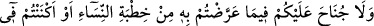
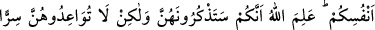
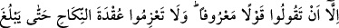
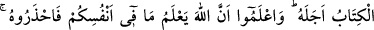

kadar uzamış olur. Bu ise haramdır.
Ölü için yaka paça yırtmaktan, beden üzerine kızgın demir ve sâir izler yapmaktan,
Araplarda adet olduğu üzere saçları tıraş etmekten veya Acemlerin yaptığı gibi saçları
kesmekten ve bağırıp çağırarak yüksek sesle ağlamaktan kaçınmak sünnettendir. Bu gibi
davranışlarda bulunanlardan Rasûlullah (s.a.) uzaktır. Çünkü bunlar cahiliyye
âdetlerindendir. Günümüzde pek çok kimse, özellikle kadınlar, bu gibi şeylere çokça
mübtelâ olmaktadırlar. Meselâ kadınlar günlerce hatta aylarca siyah elbiseler
giymektedirler. Bazen bir adam görürsün; cumalarda ve bayramlarda dahi güzel
elbiselerini giymez. Niçin böyle yaptığı sorulsa, babasının, annesinin veya başka bir
yakınının öldüğünü, bu sebeple böyle davrandığını söyler. Halbuki onun ölümünün
üzerinden aylar geçmiştir.
Râfizîler de böyledir. Onlar, Hz. Hüseyin (r.a.) Efendimiz’in şehîd edilmesine üzülüp
yas tutmada haddi aşmışlardır. Aşûrâ gününü onun ölümü için yas günü ilan etmişlerdir.
Böyle bir mübârek günde onlar, Hz. Hüseyin (r.a.) için uzun uzun bağırıp çağırarak
ağlaşırlar, hüzün ve keder ızhâr edip uygun olmayan davranışlarda bulunurlar ve hatta
sahâbeden bâzılarına sövecek kadar ileri giderler. Bu ise, Allah’ın azâb ve cezâsına
müstehak olan sapıkların amellerindendir. Sanki onlar yas konusunda vârid olan nehyi
duymamış gibidirler. Fakat şu kadar var ki, doğru bir şekilde davranmak, ancak Allah’ın
tevfîk ve inâyetiyle mümkündür.
Âyette işâret edilmiştir ki, müslümanın ölümü, ihtiyârî bir ayrılış değildir. Zevci
sebebiyle, onun vefât müddeti, dört ay on gün daha uzamaktadır. Hakk’a ulaşmaya talip
olan kulun durumu da böyledir. Kendisi ile matlûbu arasındaki ölüm hali, kulun ihtiyârı
dışında olup, mahbûbunun kerem müddeti içinde matlûbunun husûluyle meydana gelir.
Nitekim âyet-i celîle’de: “Kim Allah ve Rasûlü uğrunda hicret ederek evinden çıkar
da sonra kendisine ölüm yetişirse artık onun mükâfatı Allah’a düşer” (en-Nisâ:
4/100) buyurularak bu mânâ dile getirilmek istenmiştir.
Bu âyette, pisliğin tâ kendisi olan şeytanın, vesvese vererek, talep yolunu üzerlerine
kapamaması için, mü’minlerin gönlüne teselli vardır. Şeytan der ki: “Hakkı talep etmek
büyük bir iş, zor bir durumdur. Sen ise zayıf bir varlıksın, ayrıca ömrün de kısadır.”
Halbuki fazl duvarları arkasından kerem çağrısı şöyle nidâ eder; “Dikkat ediniz! Beni
isteyen beni bulur. Çünkü beni isteyenleri, ben de istemekteyim.” et-Te’vîlâtü’n-
Necmiyye’de böyle bir açıklama vardır.